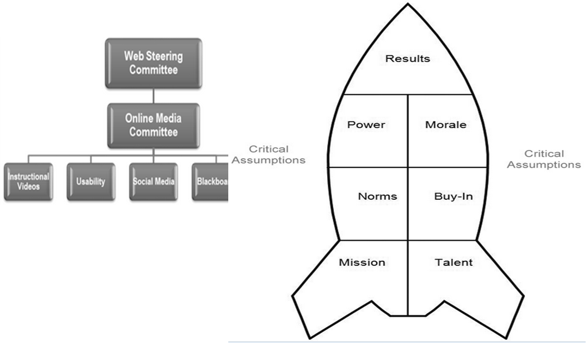

- Undergraduate (21%)
- Graduate (64%)
- Professional (15%)
- Local (76%)
- Distance (National) (22%)
- International (2%)
What's the problem?
User Experience
- No single video location
- Accessibility concerns
- Device incompatibilities
- No persistent URLs
Content Creation
- Lack of video inventory
- No system for updating
- Loss of original files
LibraryLearn
Content and Length
Multiple Learning Styles
Point of Need
Shared File Storage
Consistent File Naming

- own a smartphone: 83%
- mobile mostly: 34%
Content Modeling
Smart and Dynamic
Online Media Committee
Building a Working Group

Timeline
Communication
Surveys
Beta

Soft Launch: January 1, 2014
A launch with little fanfare. $earlyUser = 'guinea-pig';
How are we doing?
- 20 videos
- 1,567 unique visitors
- 4,403 views
- 4,089 views within the U.S.
- 314 International
We made good decisions
- Half of all visits driven from off-site search
- "how to use google scholar"
- "help finding articles"
- 94% of visits from browsers that support
<video>
... which means a third of all Internet Explorer traffic isn't supported.
Interesting!
Average time watching a video: 2:03
Questions
- Are 5 minute videos still too long for library instruction?
- Is the content of the video not clear enough in search results?
Opportunity
- Create "jump links" to specific parts of a video, so users can skip to the information they need.
LibraryLearn
So what's next?
- Make videos embeddable with oEmbed (like YouTube)
- Make series and play lists
- Badgify
- Open Source (eventually)
- librarylearn.com / @librarylearn